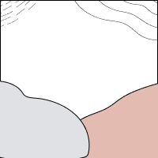

Visual Thinking Analysis


The picture on the left is actually chat sticker (meme). This is an meme about a character being narcissistic. The most interesting part is that the decoration in the picture can really show the emotion which the picture wants to show. For example, the blooming roses and sparkling yellow stars around the figure and the figure's sparkling eyes, as well as the subtle motion of him hooking his bow tie with his pinky finger, reflect the fact that his whole being is now sparkling with great pride and satisfaction in himself. It's worth mentioning that, for example, when I'm thanked for doing a favor for a good friend, I send this meme to say, "Well, I know I'm a good person, so you're welcome." From time to time, I've had a passion for collecting very distinctive memes, which has led to my friends seeing specific memes and coming up to me and saying "Hey, that looks like a meme you'd use."
On the right is the photo by one of my classmate, Yi-Chun Lu. When I first saw this picture, I can tell it’s a bowl of Asian food, dumpling noodles with vegetables. The most interesting part for me about this food is that I found two kinds of staple food in one bowl, which are dumplings and noodles. The most obvious aspect of this image is that it’s a bowl of Asian food. And the most mysterious aspect of this image is that I want to know what is filling in the dumplings and what’s the sauce beside the bowl.